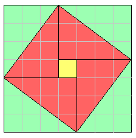

Let ABC be a right-angled triangle having the angle BAC right.
I say that the square on BC equals the sum of the squares on BA and AC.
Describe the square BDEC on BC, and the squares GB and HC on BA and AC. Draw AL through A parallel to either BD or CE, and join AD and FC.
Since each of the angles BAC and BAG is right, it follows that with a straight line BA, and at the point A on it, the two straight lines AC and AG not lying on the same side make the adjacent angles equal to two right angles, therefore CA is in a straight line with AG.
For the same reason BA is also in a straight line with AH.
Since the angle DBC equals the angle FBA, for each is right, add the angle ABC to each, therefore the whole angle DBA equals the whole angle FBC.
Since DB equals BC, and FB equals BA, the two sides AB and BD equal the two sides FB and BC respectively, and the angle ABD equals the angle FBC, therefore the base AD equals the base FC, and the triangle ABD equals the triangle FBC.
Now the parallelogram BL is double the triangle ABD, for they have the same base BD and are in the same parallels BD and AL. And the square GB is double the triangle FBC, for they again have the same base FB and are in the same parallels FB and GC.
Therefore the parallelogram BL also equals the square GB.
Similarly, if AE and BK are joined, the parallelogram CL can also be proved equal to the square HC. Therefore the whole square BDEC equals the sum of the two squares GB and HC.
And the square BDEC is described on BC, and the squares GB and HC on BA and AC.
Therefore the square on BC equals the sum of the squares on BA and AC.
Therefore in right-angled triangles the square on the side opposite the right angle equals the sum of the squares on the sides containing the right angle.
This proposition is generalized in VI.31 to arbitrary similar figures placed on the sides of the triangle ABC. If the rectilinear figures on the sides of the triangle are similar, then the figure on the hypotenuse is the sum of the other two figures.
This proposition, I.47, is often called the Pythagorean theorem, called so by Proclus and others centuries after Pythagoras and even centuries after Euclid. The statement of the proposition was very likely known to the Pythagoreans if not to Pythagoras himself. The Pythagoreans and perhaps Pythagoras even knew a proof of it. But the knowledge of this relation was far older than Pythagoras.
More than a millennium before Pythagoras, the Old Babylonians (ca. 1900-1600 B.C.E) used this relation to solve geometric problems involving right triangles. Moreover, the tablet known as Plimpton 322 shows that the Old Babylonians could construct all the so-called Pythagorean triples, those triples of numbers a, b, and c such that a2 + b2 = c2 which describe triangles with integral sides. (The smallest of these is 3, 4, 5.) For more on Pythagorean triples, see X.29.Lemma 1.
The rule for computing the hypotenuse of a right triangle was well known in ancient China. It is used in the Zhou bi suan jing, a work on astronomy and mathematics compiled during the Han period, and in the later important mathematical work Jiu zhang suan shu [Nine Chapters] to solve right triangles.
The Zhou bi includes a very interesting diagram known as the hypotenuse diagram.

This diagram may not have been in the original text but added by its primary commentator Zhao Shuang sometime in the third century C.E. A particular case of this proposition is illustrated by this diagram, namely, the 3-4-5 right triangle.
Place four 3 by 4 rectangles around a 1 by 1 square. A 7 by 7 square results. The four diagonals of the rectangles bound a tilted square as illustrated. The area of tilted square is 49 minus 4 times 6 (the 6 is the area of one right triangle with legs 3 and 4), which is 25. Therefore the tilted square is 5 by 5, and the diagonal of the original 3 by 4 rectangles is 5.
Zhao Shuang referred to the hypotenuse figure in a general way. He described all the ways the sides, the hypotenuse, and their squares can be found in terms of each other.
The Zhou bi has recently been translated into English with an excellent commentary. See Astronomy and mathematics in ancient China: the Zhou bi suan jing, by Christopher Cullin, Cambridge University Press, 1996.
According to Proclus, the specific proof of this proposition given in the Elements is Euclid's own. It is likely that older proofs depended on the theories of proportion and similarity, and as such this proposition would have to wait until after Books V and VI where those theories are developed. It appears that Euclid devised this proof so that the proposition could be placed in Book I.
Euclid presents a proof based on proportion and similarity in the lemma for proposition X.33. Compare it, summarized here, to the proof in I.47.
Let ABC be a right-angled triangle with a right angle at A. Draw AM perpendicular to BC.
According to VI.8, the triangles ABM and AMC are similar both to the whole ABC and to one another. (VI.8 concludes the triangles are similar after showing they have the same angles, see VI.4.)
Since triangle ABC is similar to triangle ABM,1 therefore, by the definition of similarity VI.Def.1, CB is to BA as BA is to BM.
Next VI.17 converts this proportion to a statement about areas, namely, the rectangle CB by BM (which is the parallelogram BL in the proof of I.47) equals the square on AB. For the same reason the rectangle BC by CM (which is the parallelogram CL in the proof of I.47) also equals the square on AC. Therefore the sum of the two rectangles CB by BM and BC by CM, which is the square on BC, equals the sum of the squares on AC and AB.2 Q.E.D.
(Actually, the final sentence is not part of the lemma, probably because Euclid moved that statement to the first Book as I.47.)
So, although Euclid's proof in I.47 may be more complicated than some others, we can see how it well it corresponds to a simpler proof that depends on the theories of proportion and similarity.
Propositions II.12 and II.13 consider triangles other than right triangles. In II.12 the right angle is replaced by an obtuse angle, while in II.13 the right angle is replaced by an acute angle. The resulting statements are actually geometric forms of the law of cosines.
Proposition VI.31 generalizes the figures that can be placed on the sides of the right triangle to any three similar figures instead of the three squares here in I.47.
This proposition is used in the next one, which its converse, in propositions II.9 through II.14 in Book II, and several propositions in the rest of the books on geometry.
| Book I | I.48 |
|---|---|
| Book II | II.9, II.10, II.11, II.12, II.13, II.14 |
| Book III | III.14, III.35, III.36 |
| Book IV | IV.12 |
| Book X | X.14, X.29, X.30, X.33, X.34, X.35 |
| Book XI | XI.23, XI.35 |
| Book XII | XII.17 |
| Book XIII | XIII.12, XIII.14, XIII.15, XIII.17 |